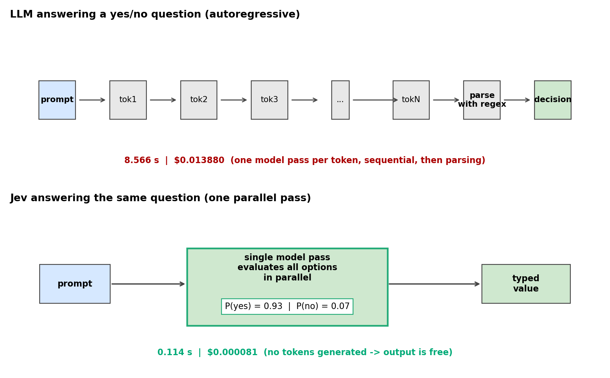
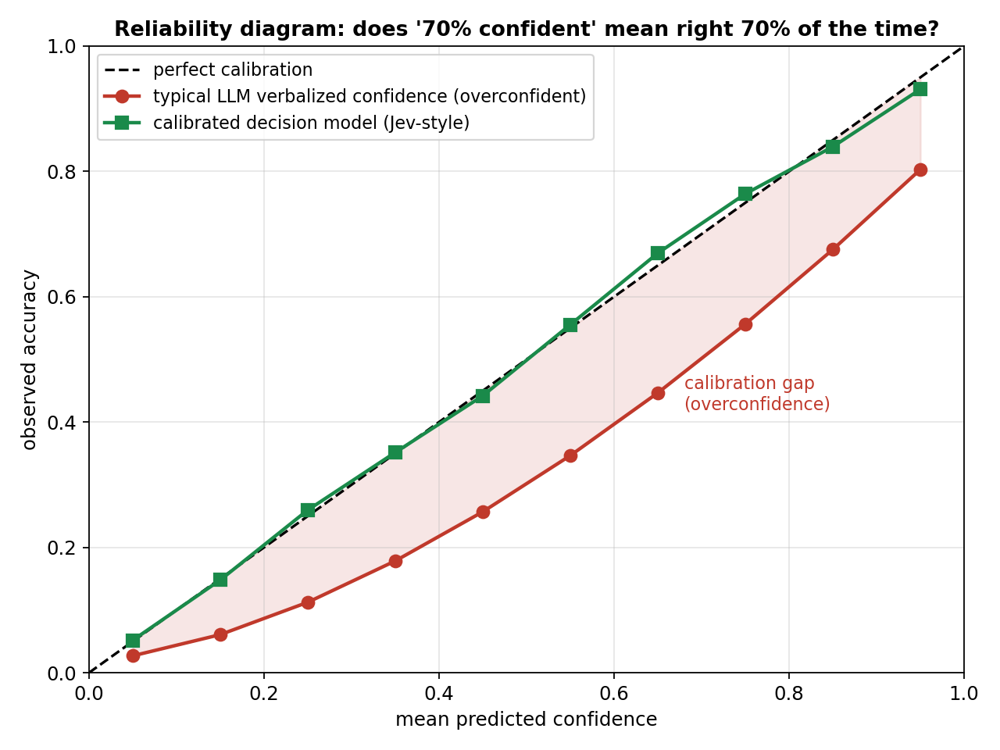
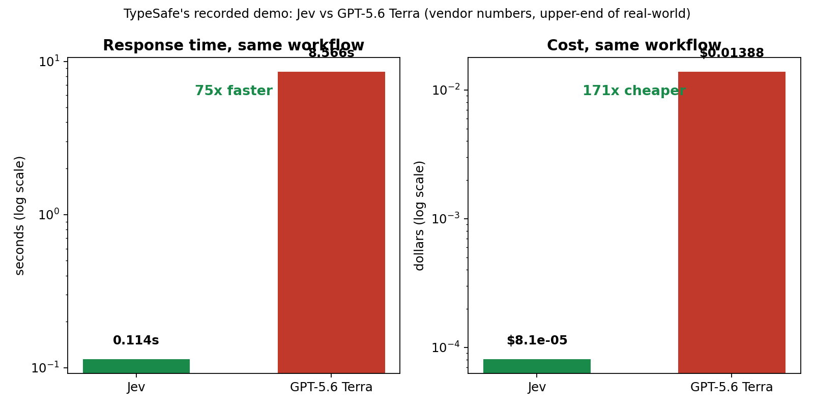
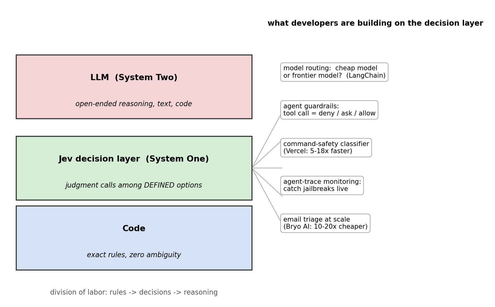

ChatGPT broke Diogo Almeida's heart.
Almeida was an OpenAI researcher who helped build ChatGPT and co-invent RLHF — the training technique arguably most responsible for the current age of AI. But he walked away disappointed: "We have lightning in a bottle, and yet it is not useful… The problem is we are optimizing for human language… We have been super good at human language for four years, but it's not useful for automation because computers speak a different language."
Two years ago he left OpenAI and founded TypeSafe AI with Erik Gafni and Sasha Sheng ($40M raised). This month, the company came out of stealth with Jev — a transformer-based model that is not an LLM. It never generates a single token. It outputs probabilities. TypeSafe calls them "calibrated decisions."
ELI5: the forms clerk
Imagine a brilliant doctor who answers every yes/no question with a ten-page essay. You then have to read the essay, find the answer, and copy it into your spreadsheet. That doctor is ChatGPT.
Now imagine a triage nurse who stamps your form: "urgent: 92%." That stamp is Jev.
Software doesn't want sentences. It wants values it can branch on: if risk > 0.9: deny(). Every time you use an LLM as a classifier, it generates dozens of tokens and you parse them back into a decision with a regex — slow, expensive, and occasionally the model hallucinates the format itself.
Jev deletes language from the loop. You define the outputs in advance — a choice among up to 255 fixed options, a score on a scale, or a probability between 0 and 1 — and the model returns the typed value directly. No tokens generated, no tokens billed, no parsing, no malformed output. Ever.

How it works: one pass, no talking
An LLM is autoregressive: token → full model pass → token → full model pass. A 50-token answer is 50 sequential passes through the weights. That's why it's slow and why output tokens cost ~5× input tokens.
Jev evaluates all candidate decisions in one parallel pass — structurally, it's closer to a giant classifier head on a transformer backbone than to a chatbot. TypeSafe is tight-lipped about the architecture (outside observers suspect an open-weight LLM base with the language-model head replaced by a decision head). It accepts text or structured program state up to ~32K tokens of context.
The numbers, from TypeSafe's recorded demo and launch materials:
- Latency: 70–500ms end-to-end. The demo: 0.114s vs 8.566s for GPT-5.6 Terra on the same workflow.
- Price: $0.042 per million input tokens ($42 per billion). Output tokens are free — there are none to bill. That is mechanical, not marketing: no autoregressive decoding means no tokens to count.
- Claimed edge: up to 193.6× faster, 444.6× cheaper than LLM alternatives.
Fine print, because vendor numbers are vendor numbers: the reference answers are the average of GPT-6 Astra and Claude Fable 5.1, TypeSafe's own team wrote the workflows, the company says these gains sit at the high end of real-world results — and it admits it cannot prove the $42/B price is unsubsidized.

The real trick: it knows when it doesn't know
"Zero hallucinations" is the headline, but read it carefully. What Jev cannot do is return a value outside its schema — structural hallucination is mathematically impossible. It can absolutely be wrong with 95% confidence. Almeida said it himself on Hacker News: "It is possible to be wrong with high confidence — and all future models will be smarter and still have this possibility."
The actual product is calibration. A calibrated model that says 70% is right about 70% of the time. LLM confidence is notoriously miscalibrated — a model saying "I'm 95% sure" might be right 60% of the time. That gap is what kills automation: you can't set a threshold on a number that lies.
Jev is trained exclusively on synthetic data with a technique Almeida calls Reinforcement Learning for Calibrated Decisions (RLCD) — "a better bet than RLHF," in his words. The lineage matters:
- RLHF (his own invention): optimize for human preference → great chat, fuzzy truth
- RLVR: optimize for verifiable correctness → right answers, unknown confidence
- RLCD: optimize for calibration → the confidence number itself is the product
Calibration is scored with proper scoring rules — log loss and the Brier score punish confident wrongness, so a model trained to minimize them is honest about uncertainty by construction. The notebook below lets you measure this yourself.

Where it sits in the stack: the decision layer
Real deployments are already live, days after launch — demand briefly took TypeSafe's API down:
- Vercel (Pranit Sharma): replaced ChatGPT Luna 5.6 running a command-safety classifier with Jev — 5–18× faster and more accurate.
- Bryo AI (Nikhil Mudholkar): Jev vs Gemini on business-email triage — Gemini slightly more accurate, 10–20× more expensive. And: "it is the only one that hands back a real probability, which makes it ideal for automating workflows."
- LangChain is evaluating it for model routing — predicting whether a workload needs the cheap model or the frontier one, a job too expensive to give an LLM.
- Agent guardrails: rating each tool call as deny / ask / allow; monitoring agent traces for jailbreaks in real time.
The division of labor developers are converging on:
- Code → exact rules, zero ambiguity
- Jev (the decision layer) → judgment calls among defined options
- LLMs → open-ended reasoning and text generation
The name is a tell: Jev, after William Stanley Jevons, of the Jevons paradox — when a commodity gets radically cheaper, you use more of it. Drop per-decision intelligence 400× in price and software gets smart everywhere, not just inside the chatbot.

The limits, stated plainly
- Fixed output space. No essays, no code, no reasoning traces you can read. The free-form work that makes general models broadly useful is out of reach.
- Wrong with confidence is still wrong. The burden shifts to you: 50% is a coin toss you ignore, 95% is a bet you take. Thresholds should scale with the cost of being wrong.
- ~32K context — an order of magnitude below frontier 1M-token windows. It can't hold your whole codebase.
- Vendor-produced claims, unsubsidized pricing unproven.
Takeaways
- Language is overhead when the consumer is code. Jev deletes the token stream entirely.
- No autoregressive decoding → 70–500ms responses, and output tokens that cost $0 by construction.
- "No hallucinations" means no structural hallucinations. Calibration — confidence numbers that tell the truth — is the real product.
- RLCD adds a third training objective to the RL lineage: RLHF for preference, RLVR for correctness, RLCD for calibration.
- The pattern to copy: put a decision layer between your rules and your reasoner. Let code be exact, let the model judge, let the LLM think.
Sources: TechCrunch (Sept 18, 2026), testingcatalog, MarkTechPost, dev.to analysis, TS2.tech. TypeSafe AI founded 2024 by Diogo Almeida, Erik Gafni, Sasha Sheng; $40M raised.